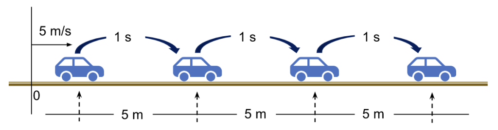
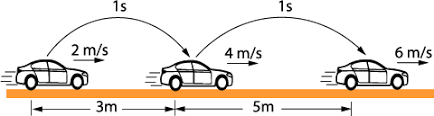

Movimiento Rectilíneo Uniforme (MRU)

El MRU es un movimiento en línea recta con velocidad constante. La ecuación fundamental es:
d = v · t
Donde:
- d: distancia recorrida (m)
- v: velocidad (m/s)
- t: tiempo (s)
Ejemplo de MRU:
Un coche viaja a una velocidad constante de 60 km/h. ¿Cuánto tiempo tardará en recorrer 180 km?
Solución:
- Datos: v = 60 km/h, d = 180 km, t = ?
- Usamos la ecuación: t = d / v
- Sustituimos: t = 180 km / 60 km/h = 3 h
El coche tardará 3 horas en recorrer 180 km a 60 km/h.
Realizar calculos
Movimiento Rectilíneo Uniforme (MRU)
Movimiento Rectilíneo Uniformemente Variado (MRUV)

El MRUV es un movimiento en línea recta con aceleración constante. Las ecuaciones fundamentales son:
v_f = v_i + a · t
d = v_i · t + ½ a · t²
Donde:
- v_f: velocidad final (m/s)
- v_i: velocidad inicial (m/s)
- a: aceleración (m/s²)
- t: tiempo (s)
- d: distancia recorrida (m)
Ejemplo de MRUV:
Un coche parte del reposo y acelera uniformemente a 2 m/s². ¿Qué distancia habrá recorrido después de 10 segundos?
Solución:
- Datos: v_i = 0 m/s, a = 2 m/s², t = 10 s, d = ?
- Usamos la ecuación: d = v_i · t + ½ a · t²
- Sustituimos: d = 0 · 10 + ½ · 2 · 10² = 100 m
El coche habrá recorrido 100 metros después de 10 segundos.